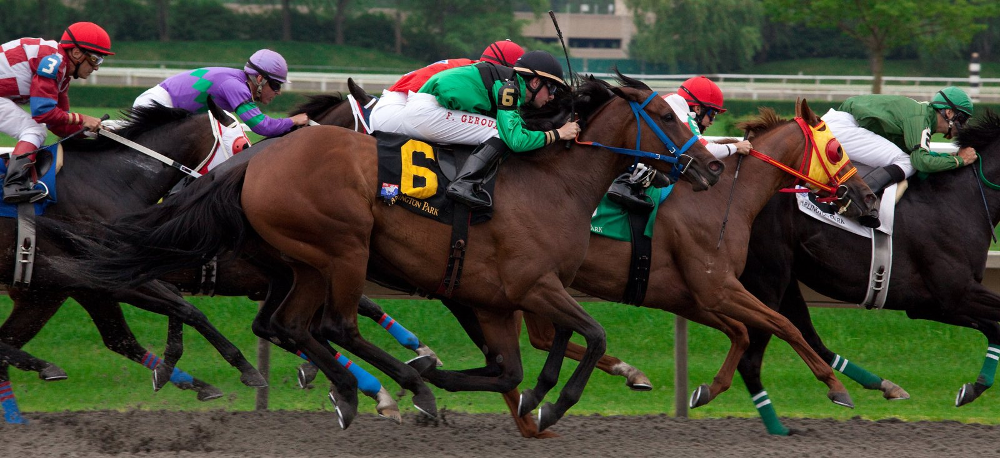

Jango Baie, segundo en la Gold Cup, se perderá la primera mitad de la campaña de Henderson
La cuadra de Nicky Henderson arranca la temporada 2026/27 de obstáculos sin Jango Baie, segundo en la Boodles Cheltenham Gold Cup, que no volverá a correr hasta la segunda mitad del curso.

La baja de Jango Baie llega antes incluso de que eche a andar el curso, y no es la noticia con la que el preparador de Seven Barrows quería abrirlo. El caballo fue segundo en la última Boodles Cheltenham Gold Cup y estará fuera durante la primera mitad de la campaña.
Henderson viene de un ejercicio de contrastes. Sus caballos sumaron siete victorias de Grado 1, pero la cuadra perdió a Sir Gino y Constitution Hill no estuvo en la salida del Champion Hurdle.
Para la nueva temporada, Henderson tiene algo menos de caballos veteranos capaces de competir al máximo nivel. El peso del relevo recae en la generación que destacó en vallas la pasada campaña y que ahora pasa a los obstáculos de steeplechase. Old Park Star, ganador del Sky Bet Supreme Novices' Hurdle, y Act Of Innocence, segundo en el Turners' Novices' Hurdle, debutarán sobre fences.
A ellos se suma la vuelta de Jonbon, un clásico de la cuadra, y Lulamba figura también entre los nombres del equipo para el curso.
La lectura es sencilla: la ausencia de Jango Baie deja hueco en la categoría de los fondistas, pero el preparador tiene relevo en la pasada promoción de novicios y en la que llega ahora.
Esa nueva hornada la componen jóvenes novicios de vallas, varios de ellos procedentes del point-to-point, con los que Henderson, ya ganador de la Gold Cup como preparador, encara la temporada 2026/27.
Por Martín Larrañeta